Templates (Experience Studio)
Introducción
Un template es una plantilla o un molde para crear páginas web. Cada template, es un archivo de extensión .template del cual se crean páginas de extensión .page. Como lo ilustra la imagen:
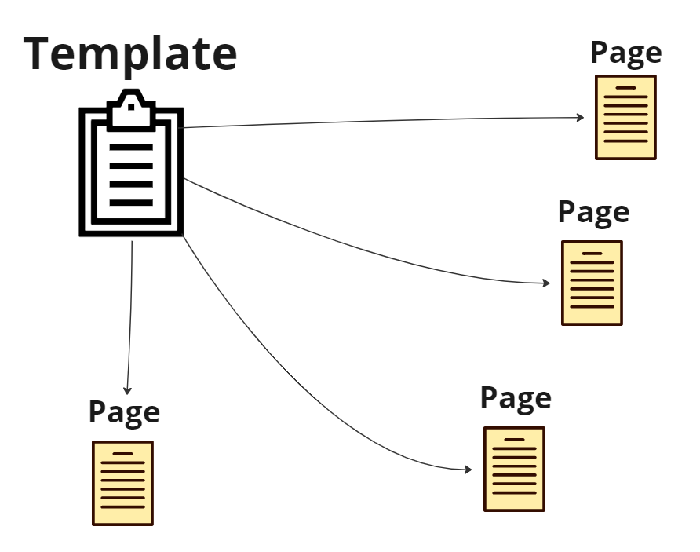En el template se importan todos los scripts .js y hojas de estilos .css que sean necesarias para el correcto funcionamiento de la página
Las páginas creadas en base al template van a heredar estas hojas de estilos y scripts. Por eso, de necesitar agregar o eliminar alguna hoja de estilos o script de una página, se debe editar el template respectivo. De esta forma se modificarán también todas las páginas que utilicen este template.
Desde el template también se importan todos los componentes que se vayan a utilizar en las páginas, las cuales heredarán los mismos componentes.
Al igual que con los scripts y CSS, para agregar o quitar componentes de una página, se debe hacer desde el template, con esta excepción.
Crear un template
- Ir a Experience Studio /templates (DEVQA)
- Clickear en "New Template" y después "Create new template" 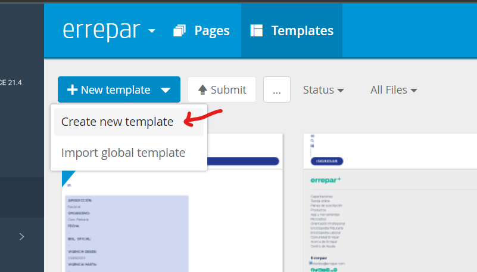
-
-
Para crear un template completamente blanco ir a "Global Templates" y luego seleccionar el template "blank". Finalmente presionar "Next"
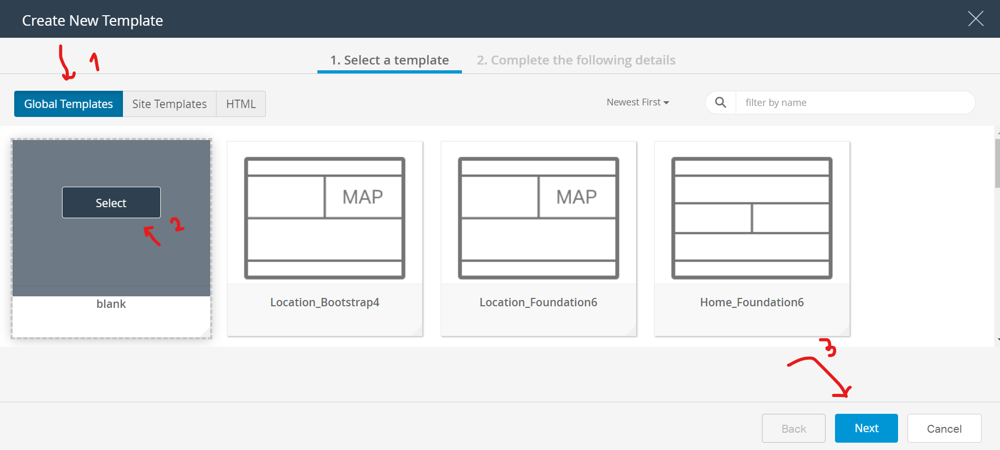 -
Para crear un template con header, footer con sus respectivos scripts y estilos ir a "Site Templates" y luego seleccionar el template "header-footer-template" (Buscarlo si no aparece). Finalmente presionar "Next"
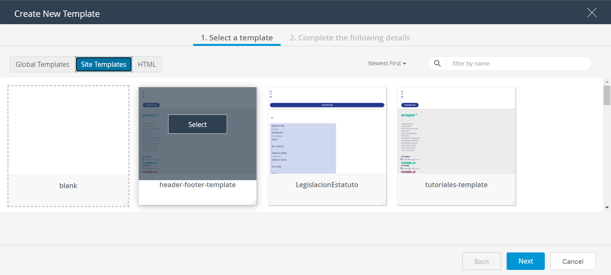
-
- Luego de seleccionar un template base para la creación de este nuevo template, definimos el nombre y al aceptar, aparecerá el nuevo template en la lista de templates 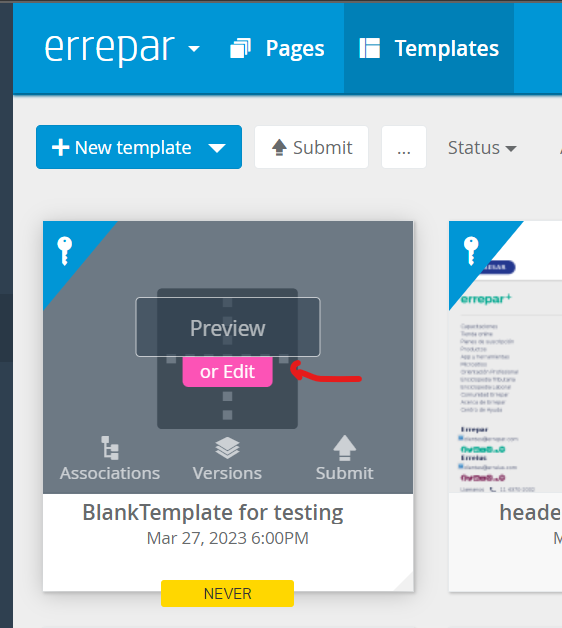
- Agregar componentes
- Para linkear CSS y JS clickear en el menú hamburguesa en la esquina superior izquierda 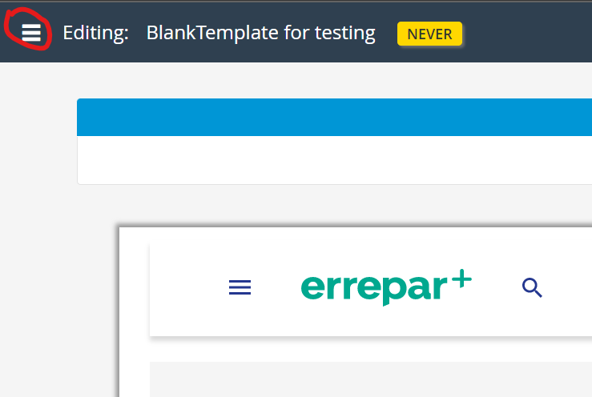
- Para linkear CSS ir a la sección CSS Resources y clickear en "+ Add a css file" 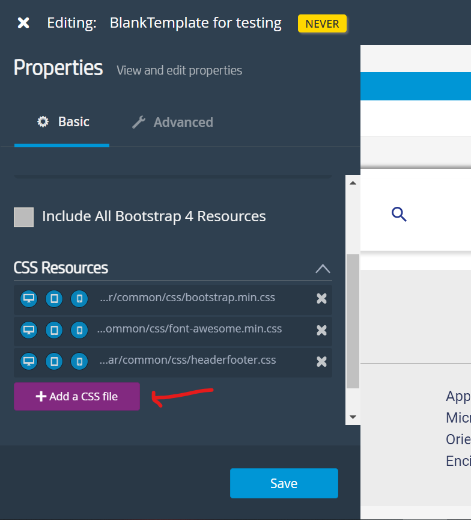
- Para linkear JS ir a la sección Sript Resources y clickear en "+ Add a script file" 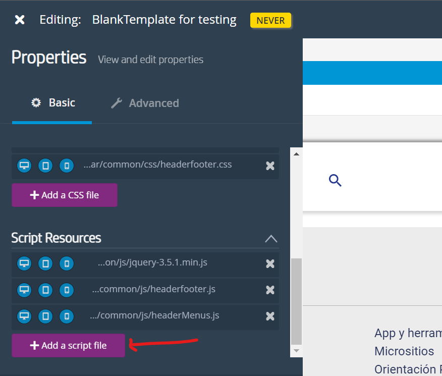
- Esos dos botones te nos permiten navegar por el directorio de archivos en CCPRO donde se ubican nuestros Scripts y Hojas de estilos.
Listo. El template estaría finalizado. Ahora se pueden crear páginas basadas en este template
Añadir componentes
- Seleccionar "Edit" en el template en cuestión
- Seleccionar editar y luego de varios segundos aparecerá la vista de edición.
-
Agregamos los componentes haciendo "hover" sobre la pantalla de
edición y presionando el botón de "+" en el centro de la pantalla
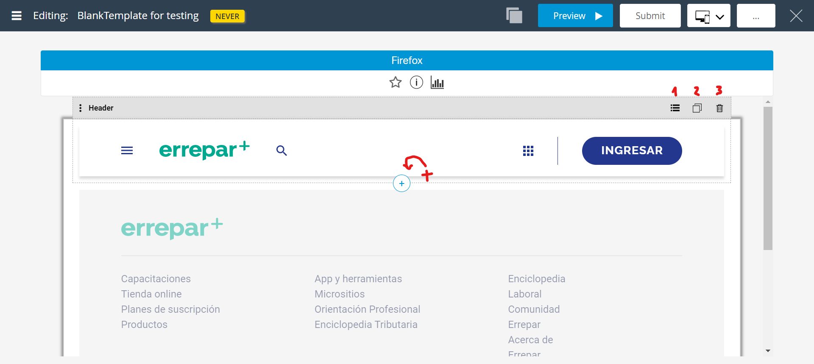
En la imagen se ven 3 botones del lado derecho del componente:
- El primero es para editar el DCR del componente si es que el componente posee un DCR
- El segundo es para duplicar el componente
- Por último, con este botón se elimina el componente del template, solamente esta instancia del componente (no se elimina el componente de teamsite).
- Al presionar el botón "+" para agregar un componente, aparecerá la siguiente vista. Para agregar un componente "custom" clickear en custom components. Luego clickear en el componente deseado. 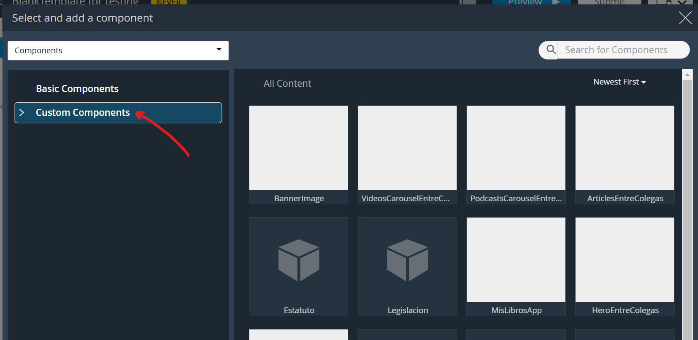
- Al hacer click en el componente, este se agregará automáticamente. 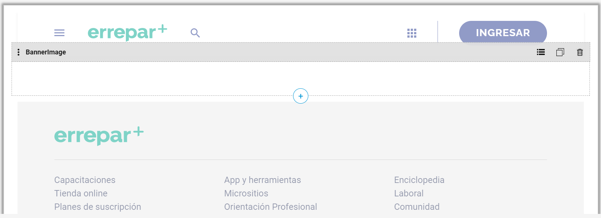